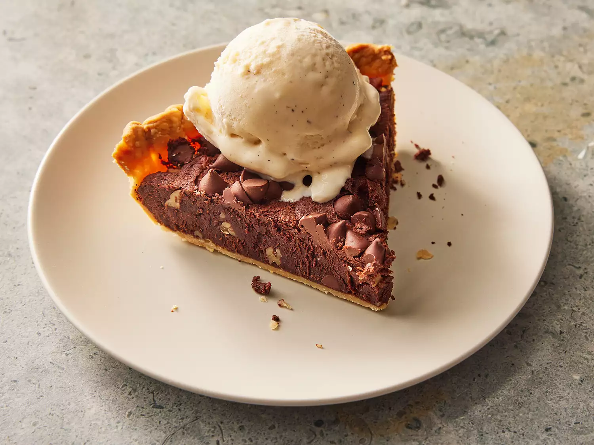

Browniepie Recipe

This brownie pie is rich and fudgy with a perfectly crisp crust. Definitely serve with ice cream, whipped cream, and salted caramel.
Ingredients
- 1 ¼ cups all-purpose flour, plus more for rolling
- 1 tablespoon granulated sugar
- ½ teaspoon kosher salt
- ½ cup cold unsalted butter, cut into 1/2-inch pieces
- 3 tablespoons ice water, or more as needed
Steps
- 10 tablespoons unsalted butter, melted and cooled
- ¾ cup granulated sugar
- 2 large eggs, at room temperature
- 1 large egg yolk, at room temperature
- 2 tablespoons canola oil
- 1 teaspoon vanilla extract
- ¾ cup unsweetened cocoa powder
- ½ cup all-purpose flour
- 2 teaspoons instant espresso granules
- ½ teaspoon kosher salt
- ½ cup chopped walnuts or hazelnuts
- ½ cup semisweet chocolate chips, divided